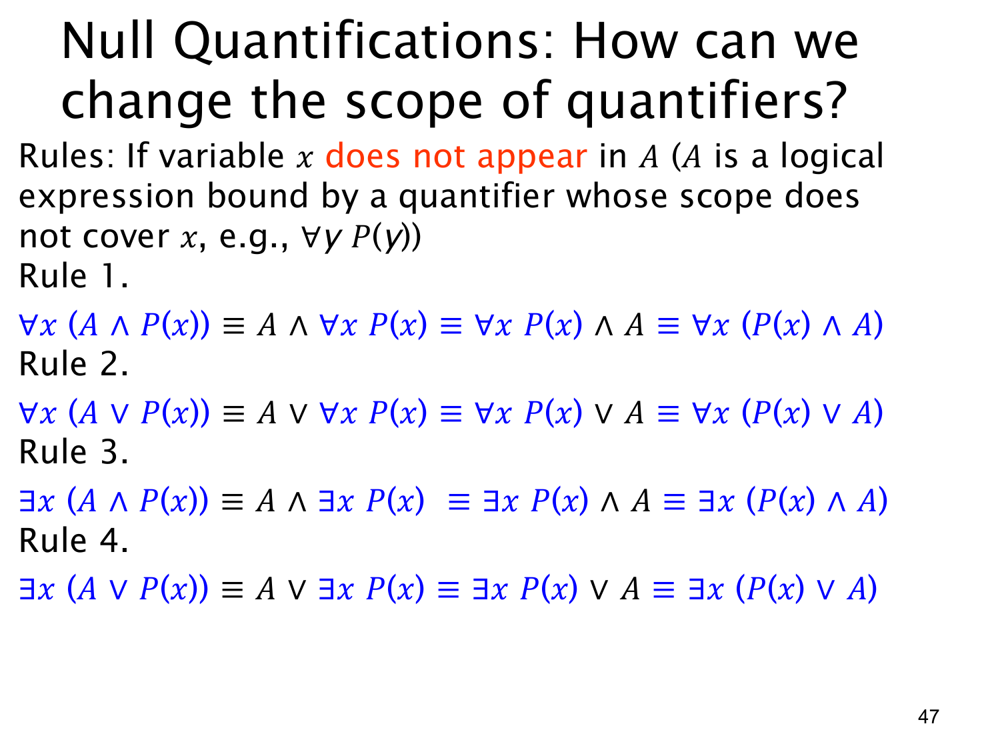

L1.2 · 第 47 页讲解原文
查看这一页课件

空量化：不依赖 x 的部分可移出作用域
这一页讨论怎样改变量词作用域。关键前提是公式 A 不依赖变量 x；课件写作“x 不在 A 中出现”。例如 A 可以是一个已封闭的命题 ∀yR(y)。在检验不同 x 时，A 的真值始终相同，所以可在合适条件下移到量词外面。
课件给出四条基本形式：
∀x(A∧P(x))∀x(A∨P(x))∃x(A∧P(x))∃x(A∨P(x))≡A∧∀xP(x),≡A∨∀xP(x),≡A∧∃xP(x),≡A∨∃xP(x).
每行还可以用“且”或“或”的交换律把量词化的部分放到 A 前面，再把 A 放回括号内，例如第一行也等价于 (∀xP(x))∧A 和 ∀x(P(x)∧A)。这些只是调整次序与作用域，不改变 A 的真假。
以第一行为例，若 A 假，则每个 A∧P(x) 都假；若 A 真，左式是否为真完全取决于每个 P(x) 是否为真，所以右式准确表达了同一条件。第四行类似：若 A 真，随便选一个论域元素即可满足 A∨P(x)；若 A 假，则必须靠某个 P(x) 成立。
注意前提。 如果 A 中的 x 仍是自由变量，移动量词可能改变它的绑定关系，四条规律不能直接套用。此外课件前面默认论域非空；尤其第一条和第四条在空论域下会出现例外：空论域的全称式自动为真、存在式自动为假，而移出的 A 仍可能任取真假。使用这些规则时要同时检查变量独立性与非空论域的约定。